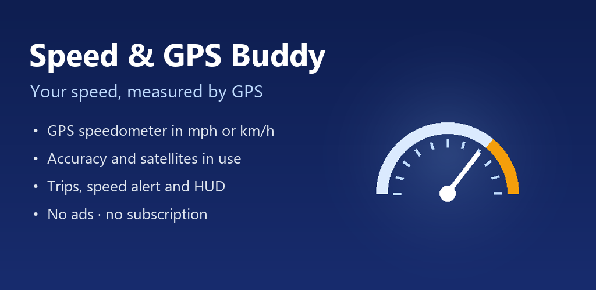
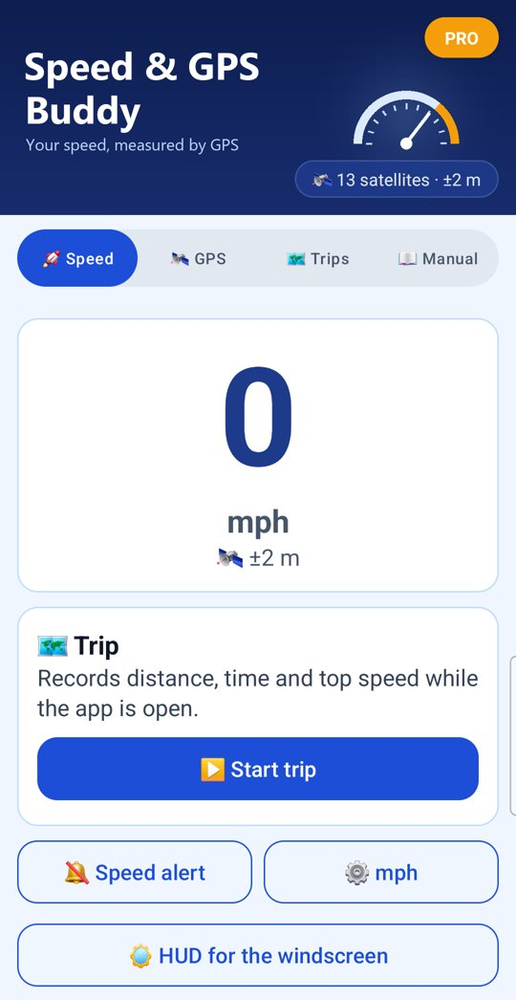
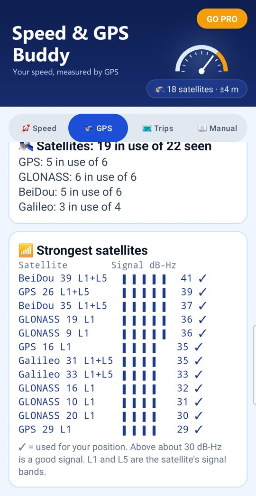
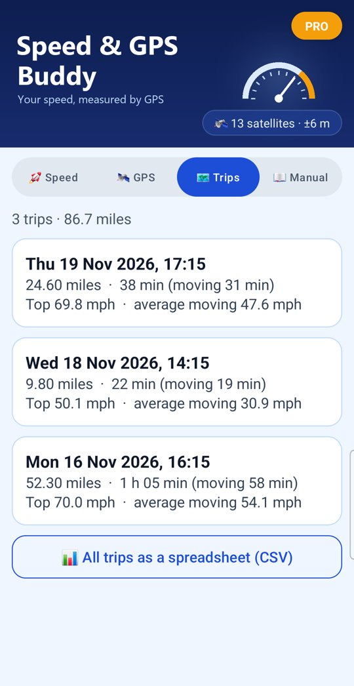
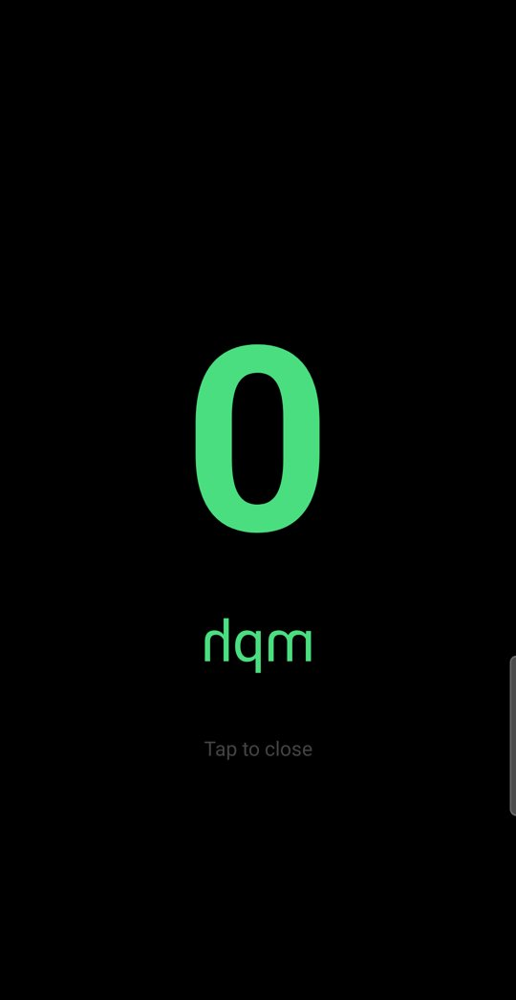

Everything below is the same text as the Manual in the app (📖 Manual tab).
Speed & GPS Buddy shows your speed from your phone's GPS, with how accurate the GPS fix is and how many satellites are in use. It records trips (distance, time, top speed and average), beeps when you go over a speed you choose, and has a mirrored head-up display for a windscreen (Pro).
The app uses location only while it's open on screen. It has no background tracking and sends nothing anywhere.
1. When you open the app, GPS is off and the speed shows 0 ("GPS off · tap Start"): nothing is measured yet.
2. Tap ▶️ Start. The first time, Android asks to allow location. GPS switches on; until it has a fix the speed shows -- and "Waiting for GPS". GPS needs a view of the sky.
3. The speed you then see is measured by GPS. If the signal is lost (a tunnel, indoors), it shows -- and says so instead of guessing.
4. ▶️ Start trip records a trip (it switches GPS on if it was off) and keeps the screen on. ⏹️ Stop trip saves it (a trip with no movement isn't saved).
5. Tap ⏹️ Stop (GPS off) when you've finished: GPS switches off and the speed goes back to 0. A running trip is saved first.
6. Leaving the app switches GPS off too. Coming back, it stays off, unless a trip was running: then GPS comes back on by itself and the trip carries on.
If you're driving, put the phone in a fixed holder and set it up before you set off. Don't touch it while you're moving. GPS speed is a guide: your vehicle's speedometer and the road signs come first, and the app can't know the speed limit.
The big number is your speed from GPS, in mph or km/h (tap the ⚙️ mph or ⚙️ km/h button to switch; a speed alert is converted too). GPS needs a clear view of the sky: indoors or in tunnels the speed can stop or jump.
Under the speed you see the GPS accuracy (for example ±4 m) and your direction of travel. If the accuracy is poor, the app says so.
The 🛰️ GPS tab shows the satellites your phone can see and how many it's using, their systems (GPS, Galileo, GLONASS, BeiDou and more), the accuracy of the fix, your height (a GPS estimate, often 10–20 m out; shown above sea level on Android 14 and newer) and your position. Use it to check why your speed or a navigation app is struggling.
Tap ▶️ Start trip on 🚀 Speed. The screen stays on while a trip runs. The app adds up the distance from good GPS fixes only, so it doesn't count GPS drift while you stand still. Tap ⏹️ Stop trip to save it. If you didn't move, the trip isn't saved.
🗺️ Trips lists your trips with distance, time, moving time, top speed and average moving speed. The trip only records while the app is open on screen: if you switch to another app, the trip pauses until you come back, and the distance you moved meanwhile isn't counted.
Tap 🔔 Speed alert on 🚀 Speed and choose a speed. When your GPS speed goes over it, the phone beeps once and the number turns red. It beeps again only after you've dropped back under it.
Tap 🪞 HUD for a big, mirrored speed on a black screen. At night, lay the phone flat on the dashboard (in a non-slip holder) with its top edge towards the windscreen: the speed reflects in the glass the right way round. Tap the screen or press Back to leave. Leaving the app closes the HUD too, unless a trip is running. Turn the phone's brightness up for the best reflection.
Free: the speedometer, GPS accuracy and satellites, the speed alert and trips (the last 3 are kept). No ads.
Pro (one payment, no subscription): every trip kept, the HUD mode, and trips as GPX (for maps apps) and CSV.
Tap GO PRO at the top. Restore purchase gets Pro back on a new phone with the same Google account.
No account, no sign-in, and no ads. Location is used only while the app is open on screen, and trips are kept only in the app's own storage on this phone. Speed & GPS Buddy has no servers and sends nothing anywhere. A trip file only leaves the phone when you share it yourself.
Google Play handles the Pro purchase.
Speed & GPS Buddy v1.3 (Build 4)
Publisher: AppStack Studio
| Question | Many speedometer apps | Speed & GPS Buddy |
|---|---|---|
| Accuracy | A number with no context | The GPS accuracy (±m) and satellites in use, so you know when to trust the speed |
| Privacy | Background tracking, ads | Location only while the app is open on screen; nothing sent anywhere |
| Price | Free with ads or a subscription | Free speedometer and trips; Pro is one payment for life (no subscription) |

1. Speed
Your speed from GPS, with the accuracy of the fix.

2. Satellites
Satellites in use from each system and the strongest signals.

3. Trips
Distance, time, top speed and average moving speed.

4. HUD (Pro)
A big mirrored speed that reflects in the windscreen at night.
Screenshots: Speed & GPS Buddy 1.1 on a Samsung Galaxy S24. The trips are sample trips; the satellites are real.